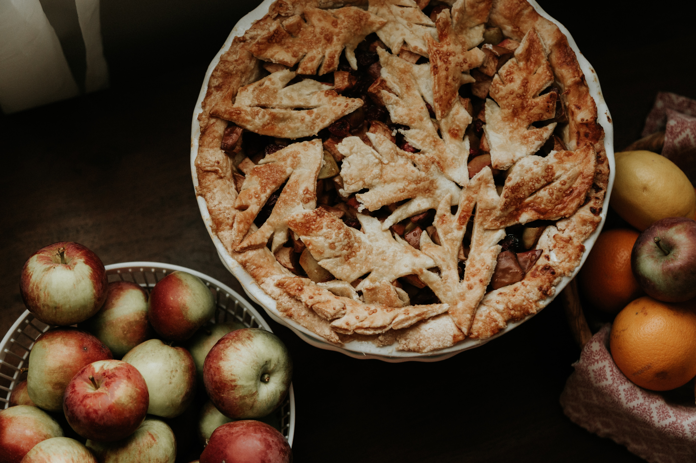

Apple Pie

The world's best apple pie!
This recipe is hands down, my favorite apple pie made from scratch! Juicy apple slices are coated in sugar and spices and then baked to perfection inside a flaky homemade pie crust.
No need to worry about mushy apples or a soggy pie crust because this apple pie bakes to perfection every single time!
Ingredients
- Pie Crust
- Apples
- Granulated Sugar
- Brown Sugar
- Flour
- Cinnamon
- Nutmeg
- Lemon
- Egg
Steps
- Heat oven to 425°F. Place 1 pie crust in ungreased 9-inch glass pie plate. Press firmly against side and bottom.
- In large bowl, gently mix filling ingredients; spoon into crust-lined pie plate. Top with second crust. Wrap excess top crust under bottom crust edge, pressing edges together to seal; flute. Cut slits or shapes in several places in top crust.
- Bake 40 to 45 minutes or until apples are tender and crust is golden brown. Cover edge of crust with 2- to 3-inch wide strips of foil after first 15 to 20 minutes of baking to prevent excessive browning. Cool on cooling rack at least 2 hours before serving.